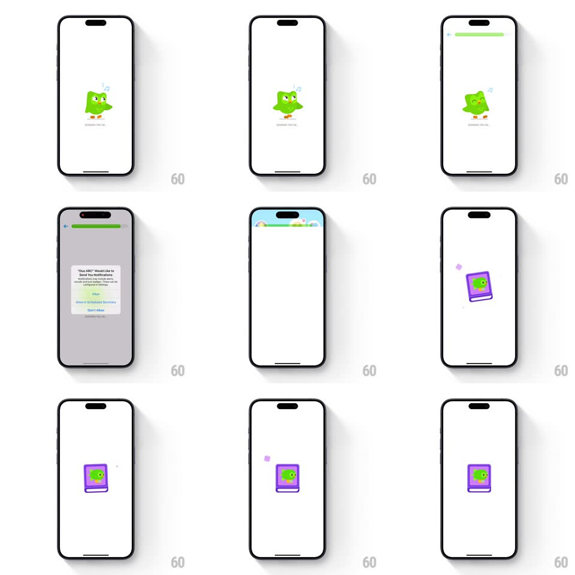

Media
Frame-by-frame

Rebuild this interaction 1:1: Duolingo ABC's launch - a sleeping green Duo mascot snoozes with floating Z's over a "Waking up..."-style progress line, a green top progress bar fills, a system notification-permission dialog interrupts, then a purple book icon bounces in with sparkle bursts.

Rebuild this interaction 1:1: Duolingo ABC's launch - a sleeping green Duo mascot snoozes with floating Z's over a "Waking up..."-style progress line, a green top progress bar fills, a system notification-permission dialog interrupts, then a purple book icon bounces in with sparkle bursts.
## Integration
Integration: stack-agnostic spec - springs given as stiffness/damping, timed motions as duration + curve; map every value to your framework and animation library of choice.
## Scene
White screens. Loading: sleeping Duo (eyes closed, "Zz" floating from its head) centered with a thin progress line beneath. A green progress bar at the very top. The system permission dialog ("Duo ABC Would Like to Send You Notifications", Allow / Don't Allow) over a dimmed screen. Then: a purple book with Duo's face, sparkles around it.
## Motion spec
Pattern: sleeping-mascot loading into bouncy reward.
- Loading: Duo breathes in sleep (scale 1 -> 1.03, 1.8s sine), Z's spawning above its head (rising 30px while fading, 1.4s each, staggered 700ms); the progress line fills slowly (linear, ~4s).
- Top progress bar fills with a soft spring as each step completes (spring ~300/22).
- The permission dialog: system-standard scale-in (0.9 -> 1, 220ms) over a 50% dim - app motion freezes respectfully behind it (Z's pause).
- After the choice: the book icon drops in from above (spring ~300/16 - a genuine bounce, two visible rebounds) landing center-screen.
- Sparkles burst around the book on landing: 5-6 small four-point stars popping (scale 0 -> 1 -> 0, 500ms each, staggered 90ms, placed around the book's perimeter).
## Calibration
- Z's are small and lavender - sleepy, not loud.
- The book's bounce is the payoff: stiffness low enough for two rebounds, never three.
## Reduced motion
Static mascot; dialog standard; book fades in without bounce or sparkles.
## Don't miss
- The mascot SLEEPS during loading - the app is being woken up, that's the joke; don't show it alert.
- The sparkles fire once on landing, not continuously - a celebration, not wallpaper.